Featured Projects
Kunj Forging Office
A new corporate office for a forging plant, planned around a double-height entrance and reception that sets the tone for the whole building. Small skylights are placed through the plan to pull daylight and a sense of the outdoors into deep interior zones — bringing the surrounding landscape inside rather than shutting it out. Delivered from concept through structural framing and site supervision.
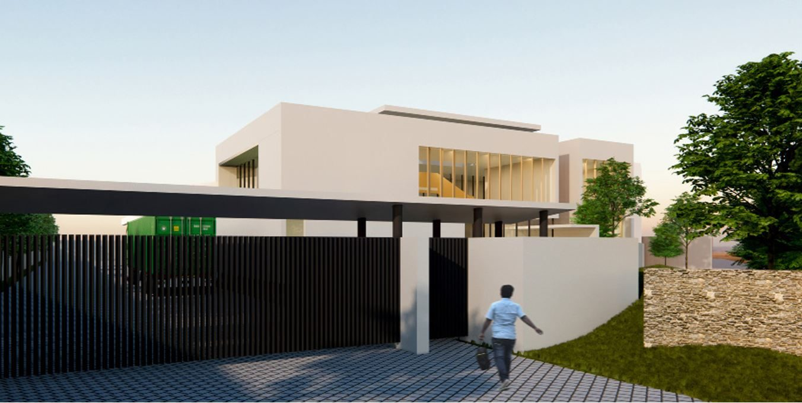
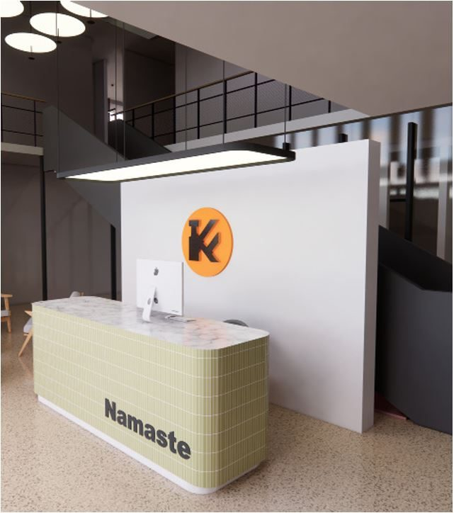
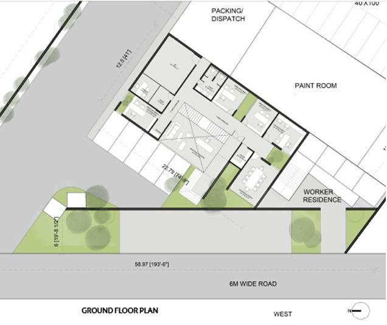
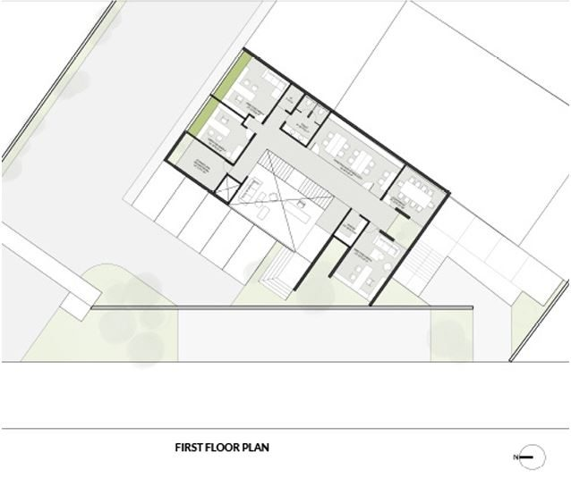
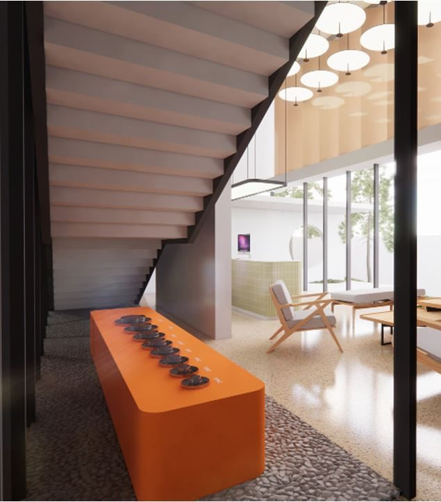
Karnal Square Commercial
A large-scale mixed-use commercial block organised into three distinct programmes stacked vertically: ground-floor retail, first-floor government offices, and third and fourth floors of leasable office space — each with its own access and parking logic worked into a single coherent site plan. Currently under construction.
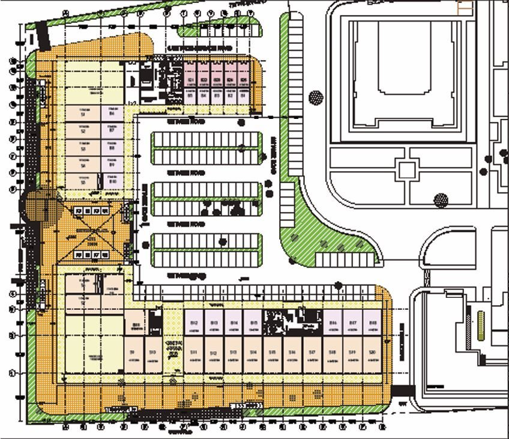
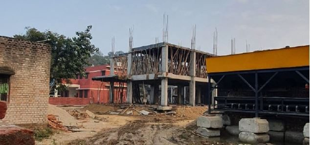
Harsha Residence
A dual-wing residence combining a working office wing — conference room, workstations, cabins and reception — with a private residential wing across two upper levels, organised around a central courtyard that brings light and ventilation into the deep floor plate.
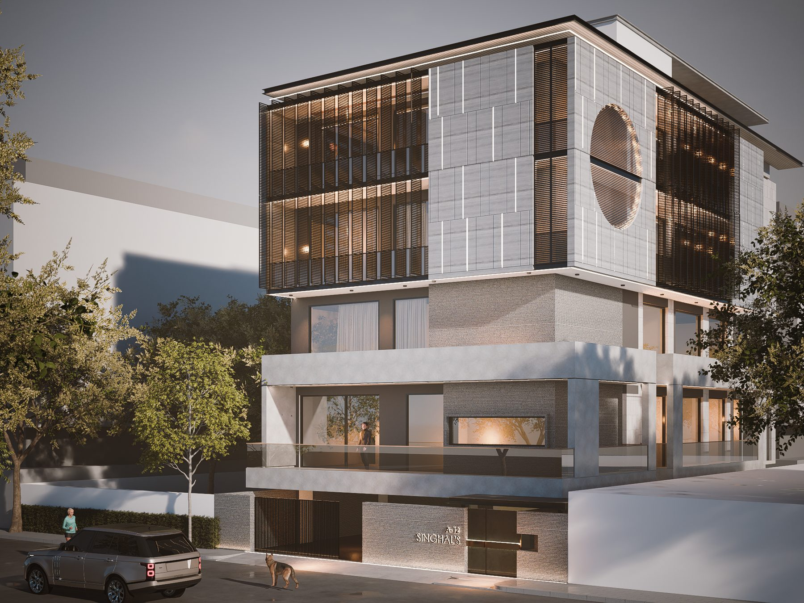
DSP Residence
A residence organised around a central courtyard, with the drawing, dining and kitchen areas wrapped around it at ground level for cross-ventilation and daylight. The upper floor holds bedrooms, a large - open mandir area and an open terrace, with warm timber-panelled interiors carried through the living spaces.
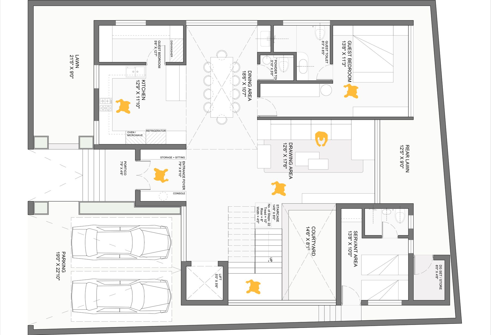
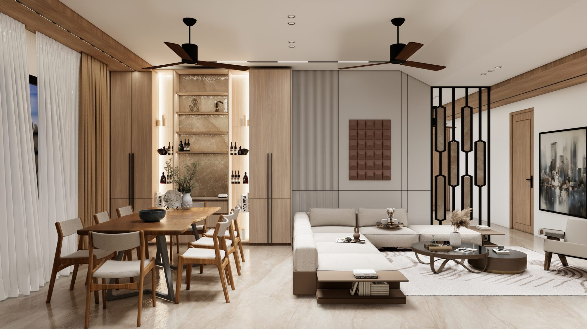
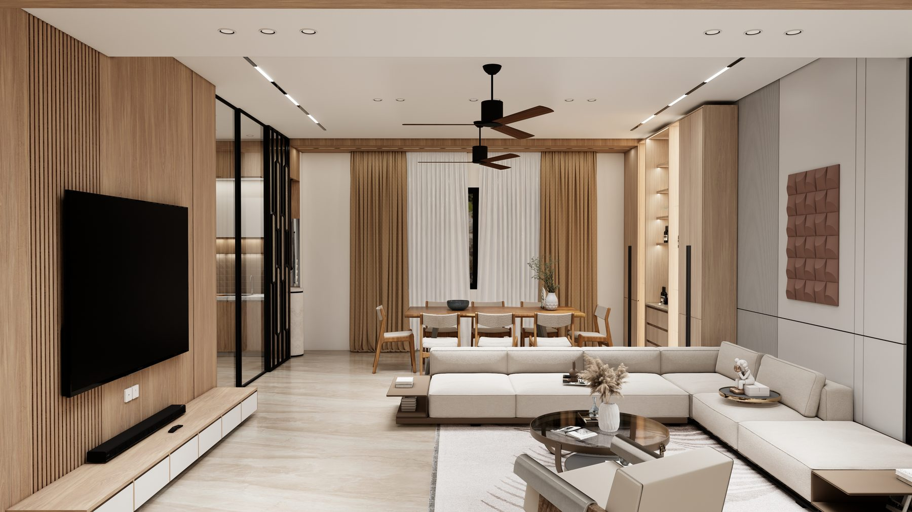
Gurukripa Residence
A compact Two and half - storey infill home for a narrow urban plot, with a stone-clad and stucco street facade broken up by planted balconies. Inside, an olive-toned kitchen with warm timber accents anchors the ground floor living spaces.

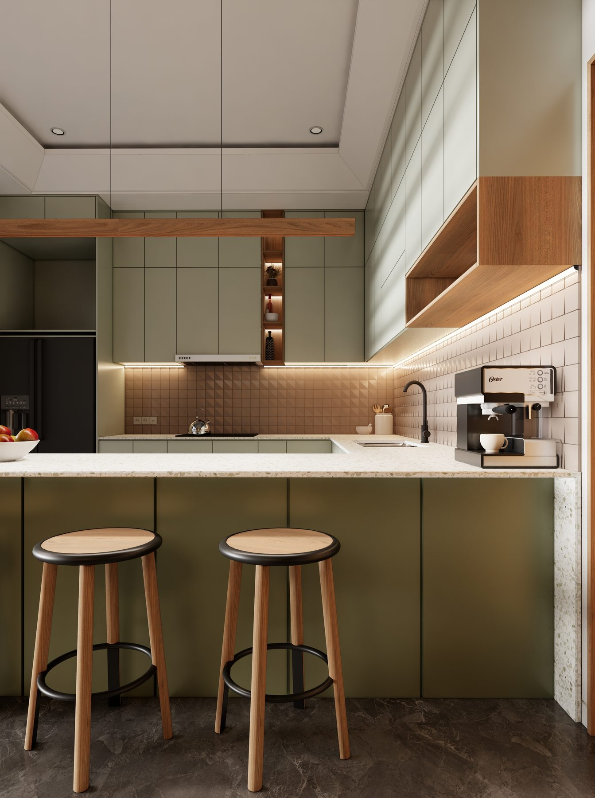
Santhalia Residence
A two-storey residence with a textured stone-pattern facade and perforated jali screen walls that manage privacy and cross-ventilation without closing the building off from the street. A rooftop planted terrace and recessed balcony bring greenery up through the elevation.
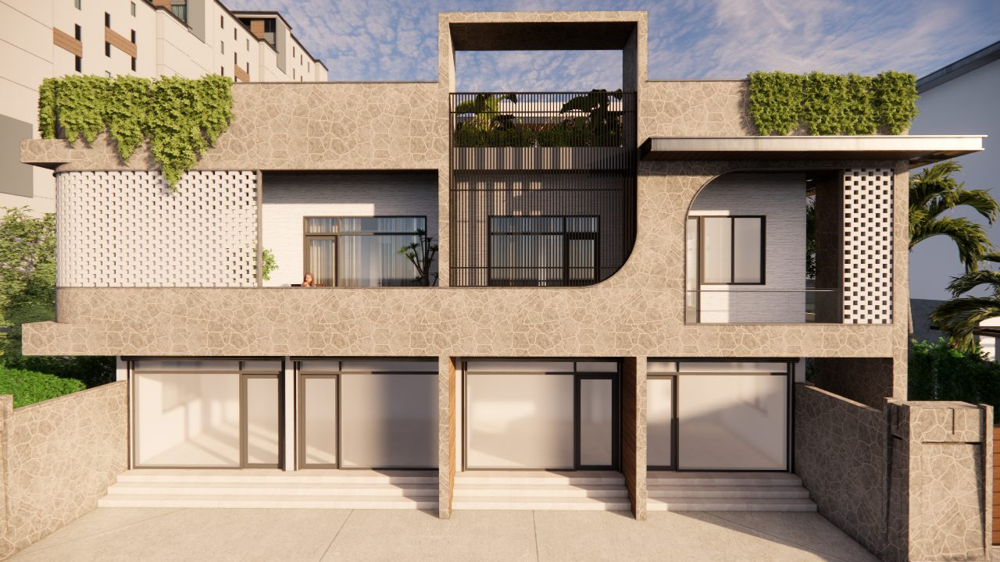
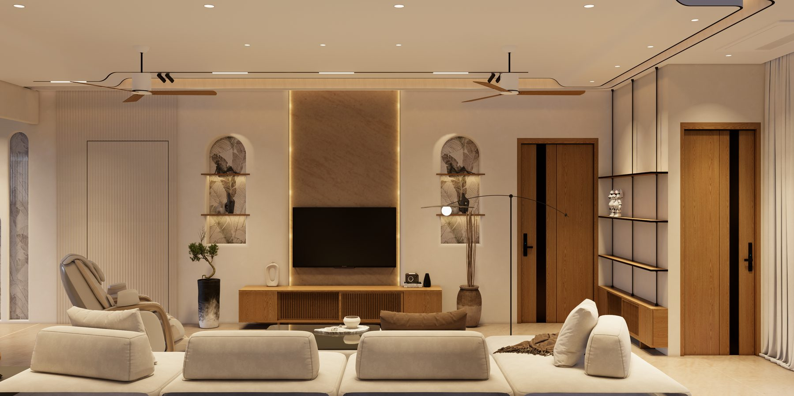
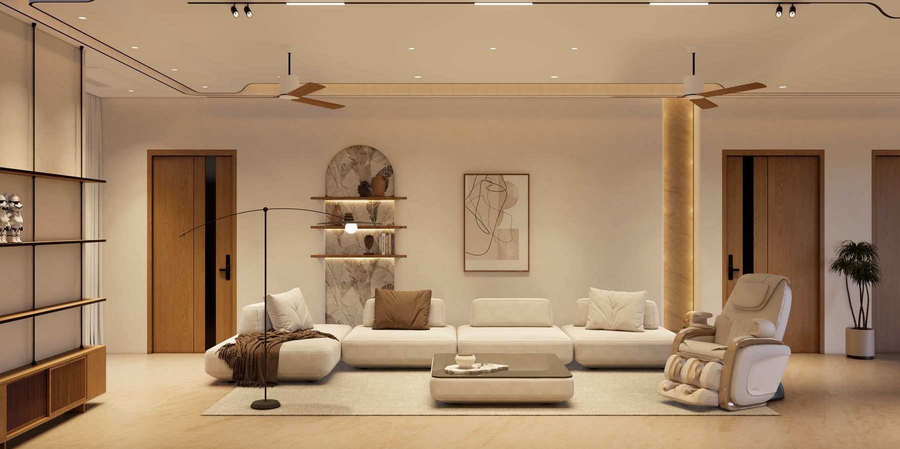